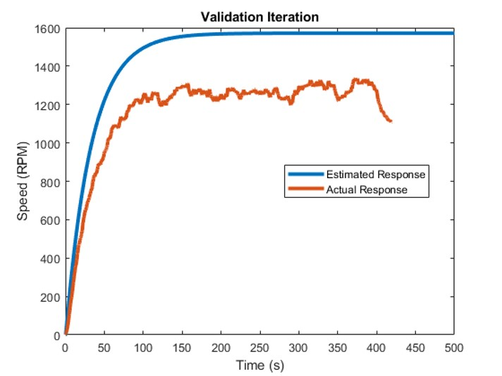

Telemetry & Data Logger
The telemetry and data logger system is used to log the output signal from any physical system. The system sniffs the data travelling between the microcontroller and different sensors through UART bus. This data is logged in csv files and is later used to estimate a mathematical model (transfer function) of the physical system and/or validating the control process. To test the telementry system, I built my own steering-by-wire physical connection which is described below:
steering-by-wire project aims to build a physical connector to control a wheel using 12 Volt dc motor. We test the project with increasing voltages and log the responses using the telemetry and data logger system. This data is fed to matlab's identification toolbox to estimate the transfer function of the system. Now that we have a mathematical model of the physical process, we can either apply open loop PID and measure the accuracy using same data logger or add feedback signal and carry closed loop PID to accomplish better accuracy and adapt any disturbance and achieve better position controlThe process of system identification:
1. Measure the input and output signals from your system in time or frequency domain.
2. Select a model structure.
3. Apply an estimation method to estimate values for the adjustable parameters in the candidate model structure.
4. Evaluate the estimated model to see if the model is adequate for your application needs.
Output Response for Step Input:

Processing the generated data:


Generating the Transfer Function:
Validation Iteration:

Closed Loop PID (the output follows the input):
Steering by Wire Demo: